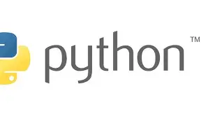

SEGUNDO ANO DO ENSINO MÉDIO!
No meu segundo ano no ensino médio, eu comecei a cursar Desenvolvimento de Sistemas e ter contato com
programação em Python pela primeira vez. Tive disciplinas como Carreiras e competências (focado no mercado de trabalho); Lógica e linguagem de programação (códigos em Python);
Redes de computadores e processos de metodologias ágeis.
